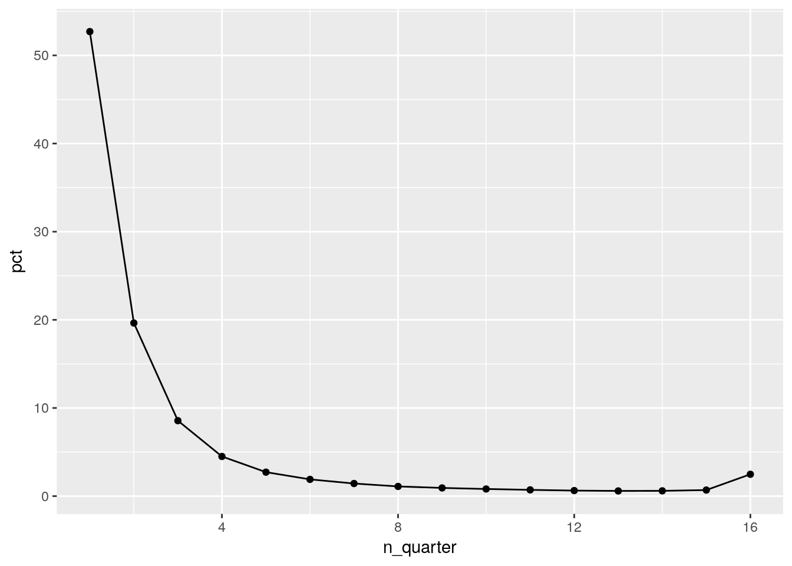

Last updated: 2018-09-25
workflowr checks: (Click a bullet for more information) ✖ R Markdown file: uncommitted changes
The R Markdown is untracked by Git. To know which version of the R Markdown file created these results, you’ll want to first commit it to the Git repo. If you’re still working on the analysis, you can ignore this warning. When you’re finished, you can run wflow_publish to commit the R Markdown file and build the HTML.
✔ Environment: empty
Great job! The global environment was empty. Objects defined in the global environment can affect the analysis in your R Markdown file in unknown ways. For reproduciblity it’s best to always run the code in an empty environment.
✔ Seed:
set.seed(20180713)
The command set.seed(20180713) was run prior to running the code in the R Markdown file. Setting a seed ensures that any results that rely on randomness, e.g. subsampling or permutations, are reproducible.
✔ Session information: recorded
Great job! Recording the operating system, R version, and package versions is critical for reproducibility.
✔ Repository version: 7a65b24
wflow_publish or wflow_git_commit). workflowr only checks the R Markdown file, but you know if there are other scripts or data files that it depends on. Below is the status of the Git repository when the results were generated:
Ignored files:
Ignored: analysis/.Rhistory
Ignored: analysis/hypothesis1_cache/
Ignored: cache/
Ignored: data/
Untracked files:
Untracked: analysis/checkMofi2018-09-25.Rmd
Unstaged changes:
Modified: analysis/CreateGraphsMofi.Rmd
Modified: lib/standardisation.R
getwd()[1] "/home/dewoller/mydoc/research/mofi/wf_continuing"rm(list=ls())
options(width = 200)
show_code = FALSE
getwd()
source("lib/functions.R")
source("lib/standardisation.R")
source("lib/get_data.R")
source("lib/generate_data_frames.R")data.cache( generate_data_frames )| n_quarter | n | pct |
|---|---|---|
| 1 | 196169 | 52.70 |
| 2 | 73104 | 19.64 |
| 3 | 31860 | 8.56 |
| 4 | 16761 | 4.50 |
| 5 | 10107 | 2.72 |
| 6 | 7068 | 1.90 |
| 7 | 5326 | 1.43 |
| 8 | 4090 | 1.10 |
| 9 | 3459 | 0.93 |
| 10 | 3030 | 0.81 |
| 11 | 2625 | 0.71 |
| 12 | 2344 | 0.63 |
| 13 | 2200 | 0.59 |
| 14 | 2242 | 0.60 |
| 15 | 2574 | 0.69 |
| 16 | 9249 | 2.48 |

Joining, by = "pin"| usage_category | 0-19 | 20-44 | 45-64 | 65+ |
|---|---|---|---|---|
| one-off | 7.11 | 42.41 | 29.80 | 20.67 |
| short-term | 2.17 | 33.73 | 31.24 | 32.85 |
| long-term | 0.19 | 16.99 | 32.57 | 50.25 |
| regular | 0.04 | 10.02 | 35.70 | 54.24 |
Joining, by = "pin"| usage_category | 0-19 | 20-44 | 45-64 | 65+ |
|---|---|---|---|---|
| one-off | 81.50 | 61.05 | 51.14 | 38.81 |
| short-term | 18.28 | 35.70 | 39.41 | 45.35 |
| long-term | 0.19 | 2.21 | 5.06 | 8.54 |
| regular | 0.03 | 1.03 | 4.39 | 7.30 |
Joining, by = "pin"| usage_category | state | 0-19 | 20-44 | 45-64 | 65+ |
|---|---|---|---|---|---|
| one-off | NSW | 7.00 | 41.36 | 30.35 | 21.29 |
| short-term | NSW | 2.02 | 31.72 | 31.66 | 34.60 |
| long-term | NSW | 0.16 | 15.51 | 32.14 | 52.19 |
| regular | NSW | 0.05 | 8.99 | 35.19 | 55.77 |
| one-off | VIC | 7.24 | 43.59 | 29.19 | 19.98 |
| short-term | VIC | 2.33 | 35.89 | 30.79 | 30.98 |
| long-term | VIC | 0.22 | 18.84 | 33.12 | 47.82 |
| regular | VIC | 0.02 | 11.31 | 36.34 | 52.33 |
Joining, by = "pin"
Joining, by = "pin"Warning: Column `supply_year` joining factors with different levels, coercing to character vectorWarning: Column `supply_year` joining character vector and factor, coercing into character vector
Warning: Column `supply_year` joining character vector and factor, coercing into character vector| supply_year | state | one-off | short-term | long-term | regular |
|---|---|---|---|---|---|
| 2013 | NSW | 0.6383097 | 3.216303 | 2.651683 | 8.526021 |
| 2014 | NSW | 0.5490987 | 2.439458 | 3.139524 | 9.026157 |
| 2015 | NSW | 0.5502903 | 2.192478 | 3.207611 | 9.002809 |
| 2016 | NSW | 0.5947590 | 2.509148 | 2.735105 | 8.372644 |
| 2013 | VIC | 0.6529820 | 3.136456 | 2.559492 | 8.748890 |
| 2014 | VIC | 0.5435527 | 2.393317 | 2.978648 | 9.075984 |
| 2015 | VIC | 0.5441866 | 2.183285 | 3.084907 | 8.987128 |
| 2016 | VIC | 0.5844044 | 2.592955 | 2.529736 | 8.407670 |
Joining, by = "pin"
Joining, by = "pin"Warning: Column `supply_year` joining character vector and factor, coercing into character vector
Warning: Column `supply_year` joining character vector and factor, coercing into character vector
Warning: Column `supply_year` joining character vector and factor, coercing into character vector| type_name | state | supply_year | one-off | short-term | long-term | regular |
|---|---|---|---|---|---|---|
| Bupre | NSW | 2016 | 0.0050658 | 0.1037212 | 0.1349020 | 0.3290595 |
| Fentanyl | NSW | 2016 | 0.0056207 | 0.1140958 | 0.2047354 | 0.8363788 |
| Hydromorphone | NSW | 2016 | 0.0073179 | 0.0723005 | 0.0730771 | 0.1896607 |
| Methadone | NSW | 2016 | 0.0001453 | 0.0080465 | 0.0394292 | 0.1917099 |
| Morphine | NSW | 2016 | 0.0085045 | 0.0797737 | 0.0668361 | 0.4956167 |
| Oxycodone and Oxy+Nalox | NSW | 2016 | 0.0790429 | 0.5502578 | 0.6001880 | 2.2168583 |
| Para_Codeine | NSW | 2016 | 0.4359161 | 1.1280231 | 1.0024001 | 2.5029085 |
| Tapentadol | NSW | 2016 | 0.0045924 | 0.0711980 | 0.1129873 | 0.1917724 |
| Tramadol | NSW | 2016 | 0.0485534 | 0.3817311 | 0.5005495 | 1.4186788 |
| Bupre | VIC | 2016 | 0.0046470 | 0.1284853 | 0.1701312 | 0.4162044 |
| Fentanyl | VIC | 2016 | 0.0028059 | 0.0978055 | 0.1435337 | 0.5462871 |
| Hydromorphone | VIC | 2016 | 0.0016376 | 0.0291158 | 0.0381368 | 0.3470803 |
| Methadone | VIC | 2016 | 0.0001268 | 0.0147592 | 0.0114251 | 0.1823030 |
| Morphine | VIC | 2016 | 0.0090156 | 0.0851740 | 0.0653573 | 0.6057981 |
| Oxycodone and Oxy+Nalox | VIC | 2016 | 0.0983687 | 0.5738136 | 0.5407679 | 1.8151105 |
| Para_Codeine | VIC | 2016 | 0.4006385 | 1.1142083 | 0.9061141 | 2.7741708 |
| Tapentadol | VIC | 2016 | 0.0060026 | 0.0847950 | 0.1168639 | 0.1958444 |
| Tramadol | VIC | 2016 | 0.0611617 | 0.4647983 | 0.5374060 | 1.5248713 |
Joining, by = "pin"
Joining, by = "pin"Warning: Column `supply_year` joining character vector and factor, coercing into character vector
Warning: Column `supply_year` joining character vector and factor, coercing into character vector
Warning: Column `supply_year` joining character vector and factor, coercing into character vector| usage_category | 2013 0-19 | 2013 20-44 | 2013 45-64 | 2013 65+ | 2014 0-19 | 2014 20-44 | 2014 45-64 | 2014 65+ | 2015 0-19 | 2015 20-44 | 2015 45-64 | 2015 65+ | 2016 0-19 | 2016 20-44 | 2016 45-64 | 2016 65+ |
|---|---|---|---|---|---|---|---|---|---|---|---|---|---|---|---|---|
| one-off | 0.1346011 | 0.6711954 | 0.8216512 | 1.147181 | 0.1400060 | 0.6434641 | 0.6801225 | 0.7748579 | 0.1438241 | 0.6476888 | 0.6734983 | 0.7702652 | 0.1612286 | 0.6625239 | 0.7290855 | 0.8912487 |
| short-term | 0.0711276 | 1.8144473 | 4.0371923 | 10.254967 | 0.0900463 | 1.5950634 | 3.1378111 | 7.0574065 | 0.0983403 | 1.5352648 | 3.0440791 | 5.7222013 | 0.1062158 | 1.7370718 | 3.5203716 | 6.7378365 |
| long-term | 0.0039313 | 1.1460023 | 3.6158288 | 8.749233 | 0.0082510 | 1.3444499 | 4.2993684 | 10.0714899 | 0.0149651 | 1.6014741 | 4.5897959 | 9.4536431 | 0.0131444 | 1.4317099 | 4.0741952 | 7.2933002 |
| regular | 0.0080094 | 2.6302949 | 15.8924165 | 25.000049 | 0.0101150 | 3.0597002 | 16.4470407 | 25.6259424 | 0.0066329 | 3.1490496 | 16.3767387 | 24.9375071 | 0.0101296 | 2.9496054 | 15.3045805 | 22.9713098 |
sessionInfo()R version 3.4.4 (2018-03-15)
Platform: x86_64-pc-linux-gnu (64-bit)
Running under: Ubuntu 17.10
Matrix products: default
BLAS: /usr/lib/x86_64-linux-gnu/openblas/libblas.so.3
LAPACK: /usr/lib/x86_64-linux-gnu/libopenblasp-r0.2.20.so
locale:
[1] LC_CTYPE=en_AU.UTF-8 LC_NUMERIC=C LC_TIME=en_AU.UTF-8 LC_COLLATE=en_AU.UTF-8 LC_MONETARY=en_AU.UTF-8 LC_MESSAGES=en_AU.UTF-8 LC_PAPER=en_AU.UTF-8
[8] LC_NAME=C LC_ADDRESS=C LC_TELEPHONE=C LC_MEASUREMENT=en_AU.UTF-8 LC_IDENTIFICATION=C
attached base packages:
[1] grid stats graphics grDevices utils datasets methods base
other attached packages:
[1] bindrcpp_0.2.2 keyring_1.1.0 RPostgreSQL_0.6-2 DBI_1.0.0 forcats_0.3.0 dplyr_0.7.6 purrr_0.2.5 readr_1.1.1 tidyr_0.8.1 tibble_1.4.2
[11] ggplot2_2.2.1 tidyverse_1.2.1 shiny_1.1.0 DataCache_0.9 ordinal_2018.4-19 foreign_0.8-70 readstata13_0.9.2 tmaptools_2.0 tmap_2.0 lubridate_1.7.4
[21] pander_0.6.2 kableExtra_0.9.0 knitr_1.20 broom_0.5.0 stringr_1.3.1 magrittr_1.5 seas_0.5-2 MASS_7.3-50 data.table_1.11.4 wrapr_1.5.1
[31] nvimcom_0.9-75
loaded via a namespace (and not attached):
[1] colorspace_1.3-2 class_7.3-14 gdalUtils_2.0.1.14 leaflet_2.0.1 rgdal_1.3-3 rprojroot_1.3-2 satellite_1.0.1 base64enc_0.1-3 dichromat_2.0-0 rstudioapi_0.7
[11] xml2_1.2.0 codetools_0.2-15 R.methodsS3_1.7.1 jsonlite_1.5 workflowr_1.1.1 png_0.1-7 R.oo_1.22.0 rgeos_0.3-28 compiler_3.4.4 httr_1.3.1
[21] backports_1.1.2 mapview_2.4.0 assertthat_0.2.0 Matrix_1.2-14 lazyeval_0.2.1 cli_1.0.0 later_0.7.3 htmltools_0.3.6 tools_3.4.4 gtable_0.2.0
[31] glue_1.3.0 Rcpp_0.12.18 cellranger_1.1.0 raster_2.6-7 nlme_3.1-137 iterators_1.0.10 crosstalk_1.0.0 lwgeom_0.1-4 rvest_0.3.2 mime_0.5
[41] XML_3.98-1.12 scales_0.5.0 hms_0.4.2 promises_1.0.1 parallel_3.4.4 RColorBrewer_1.1-2 yaml_2.1.19 stringi_1.2.3 ucminf_1.1-4 highr_0.7
[51] foreach_1.4.4 e1071_1.6-8 spData_0.2.9.0 rlang_0.2.2 pkgconfig_2.0.1 evaluate_0.10.1 lattice_0.20-35 bindr_0.1.1 sf_0.6-3 htmlwidgets_1.2
[61] labeling_0.3 tidyselect_0.2.4 plyr_1.8.4 R6_2.2.2 pillar_1.3.0 haven_1.1.2 whisker_0.3-2 units_0.6-0 sp_1.3-1 modelr_0.1.2
[71] crayon_1.3.4 KernSmooth_2.23-15 rmarkdown_1.10 readxl_1.1.0 git2r_0.23.0 digest_0.6.15 classInt_0.2-3 webshot_0.5.0 xtable_1.8-2 httpuv_1.4.5
[81] R.utils_2.6.0 stats4_3.4.4 munsell_0.5.0 viridisLite_0.3.0 This reproducible R Markdown analysis was created with workflowr 1.1.1